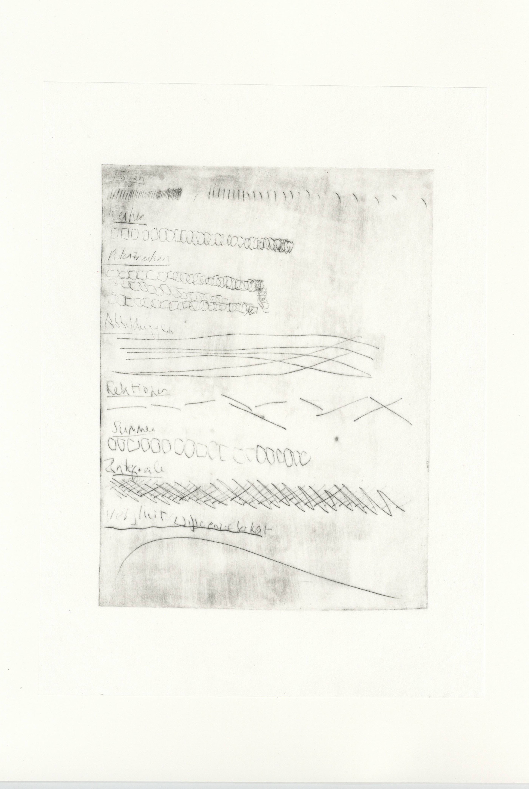
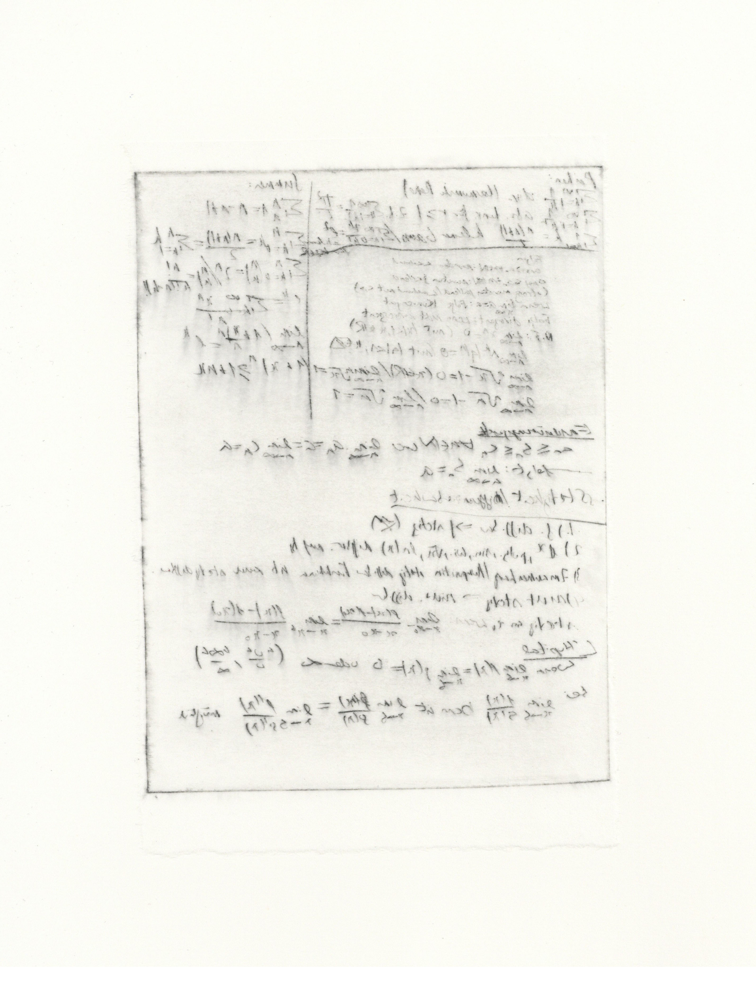

Graphische Sprache
Ich unterteile meine abstrakten Zeichnungen in Essenzen, Grundeinheiten, Bewegungen, die immer wiederkehren und versuche diese voneinander
zu isolieren. Ein Versuch eine Art Formelblatt, oder Vokubular einer abstrakten, graphischen Sprache zu entwickeln.
Ich fing mit der Idee und dem Konzept des Formelblatts an: Strukturen, Muster, nützliche Konzepte, die wiederholt beim Lösen von mathematischen
Problemen angewandt werden können, werden auf einem Blatt zum Nachschlagen festgehalten
und dienen als Orientierung und Merkhilfe in chaotischen Prüfungssituationen. Es ähnelt dem Konzept des Kochbuchs, der Anleitung, oder eines Regelhefts zum Lernen einer Sprache.
Dieses Konzept übertrug ich auf abstrake Zeichnungen von Linien und entwickelte eine Anleitung zur Linie.
Ich zeige verschiedene Kästchen, die Linienzeichnung verschiedener
Strichrichtung, Textur, Rythmus, Charakter und Bewegung beinhalten. Sie sind wie Vokabeln, die ich wieder verwenden und kombinieren kann,
wenn ich mich auf dem Blatt ausdrücken will, also eine Strichzeichnung anfertigen möchte, die sich aus diesen verschiedenen
Elementen kombiniert und komplexer ist, wie eine Art Text, der sich aus Grundeinheiten unter Beachtung universeller Regeln und Grammatik, zu etwas Größeren kombiniert.

